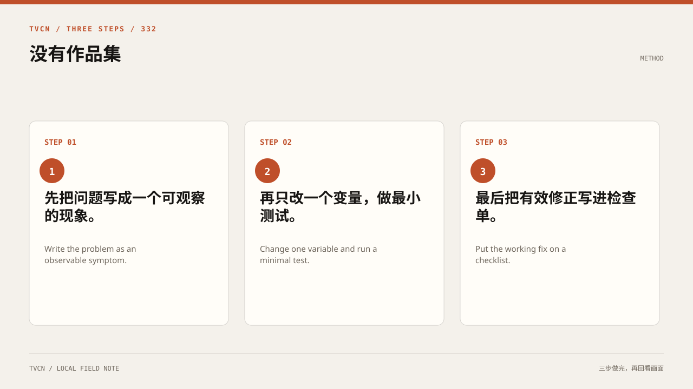

没有作品，就先做“可署名的三个小交付”
不要等大项目。选三个你真正能完成的小片：一个 60 秒人物、一个 30 秒产品、一个 15 秒活动。每个都写清你负责什么、用什么拍、交付了什么。
作品集不是片子堆叠，是“问题—动作—结果”三行说明。客户看的是你能不能解决他的问题。
边界
不要把练习标成商业案例。虚构客户、伪造数据、把别人的镜头算成自己的，一旦被看出，作品集全部失效。
没有客户，也能做出可被信任的作品集
作品集不是“客户名单”，是“你能解决什么问题”的证据。没有商业项目时，用三类作品补：自命题、拆片复刻、流程记录。每一类都能证明不同的能力。
| 类型 | 证明什么 | 最小交付 |
|---|---|---|
| 自命题短片 | 叙事、导演、剪辑 | 1 个 60 秒成片 + 1 页意图 |
| 拆片复刻 | 镜头、灯光、调色的执行精度 | 原片截图 + 复刻帧 + 差异说明 |
| 流程记录 | 可靠性、沟通、交付 | 1 页时间线 + 风险表 + 成片 |
每个项目只写四块
- 问题：谁遇到什么具体问题，一句话。
- 约束：预算、时间、场地、人力，至少写两个。
- 动作：你做了什么取舍，不只写“拍了”。
- 结果：可验证的变化，或诚实写“未上线/未测试”。
不要放什么
- 没有授权的客户片、路人清晰正脸、未清理的音乐。
- 只写“负责拍摄剪辑”的职责列表，没有判断。
- 把团队作品写成个人作品；注明角色，反而更可信。
作品集首页放 3 个最强项目，不要放 20 个。每个项目给一个“看片理由”：30 秒版本、技术拆解、或一页复盘。没有客户时，自命题项目要标注“自命题”，不要暗示是商业委托。
DIAGRAM / Method card
三步流程

现场
做三条 30 秒：会拍人、会拍物、会讲一件事；每条一个能力。
怎么做
没有作品集，先做三条三十秒的“能力片”：会拍人、会拍物、会讲一件事。
- 每条只展示一个能力：人物采访、产品质感或叙事转折。
- 用同一套参数拍，保证质量稳定。
- 每条配一页拆解：目标、做法、结果、失败点。
别踩
别拿旅游混剪当作品集；客户看不出你会什么。
图片说明：本页封面、图解与步骤图是编辑示意或结构图，不是本页实测照片，也不能当作器材测试证据；AI 辅助生成的图会在图注标出。判断器材或画面，以正文的测试条件与现场记录为准。